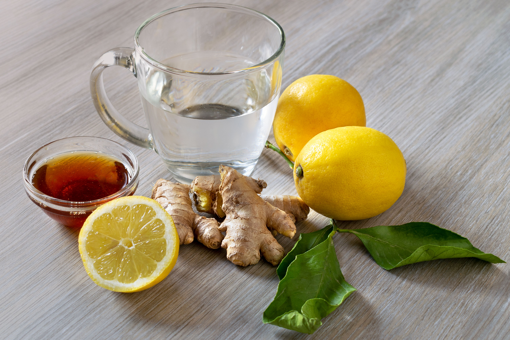

CitrusComfort

A warm, soothing tea blend of fresh ginger and zesty lemon, with an optional touch of honey for natural sweetness
Ingredients:
- 1 small piece of fresh ginger (about 1 inch), sliced
- 1/2 lemon, sliced
- 1-2 teaspoons of honey (optional)
- 2 cups of water
The steps:
- Bring 2 cups of water to a boil in a small pot.
- Add the sliced ginger to the boiling water and let it simmer for 5-10 minutes, depending on how strong you want the ginger flavor.
- Remove the pot from heat and add lemon slices. Let it steep for 1-2 minutes.
- Pour the tea into a cup, straining out the ginger and lemon slices if desired.
- Stir in honey for added sweetness, if using.
- Enjoy your warm, soothing ginger lemon tea!